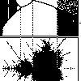

| Restricting our attention to just real numbers, the
Mandelbrot iteration scheme reveals an interesting relation with the familiar
logistic map bifurcation diagram. |
 |
| Real Newton's Method.
Newton's method for finding roots. Newton's method recast as graphical iteration.
A familiar shape. |
|
| Complex Newton's Method.
Julia sets related to finding the roots of equations. SImilar features arise in magnetic pendula and in
light reflected within a pyramid of shiny spheres. |
 |
| Universality of
the Mandelbrot Set.
Newton's method for a family of cubic polynomials revealed more copies of the Mandelbrot set.
Yet Newton's method is nothing like z → z2 + c. Further investigation
shows we're surrounded by Mandelbrot sets. |
 |